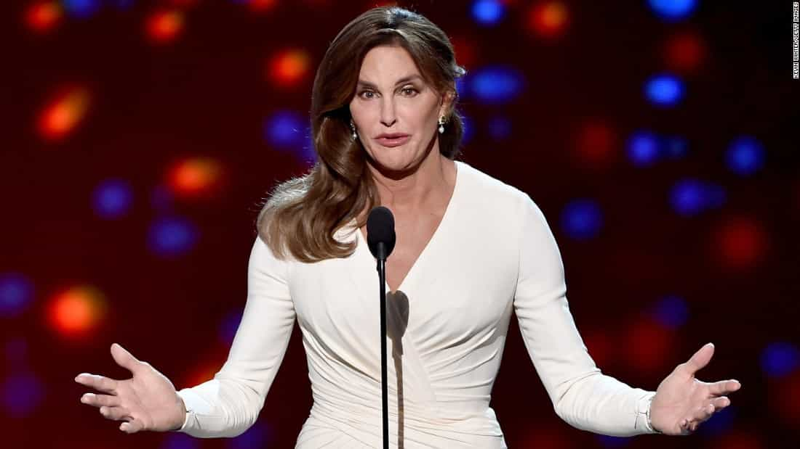

< < < Back
New Yorkers Can Now Be Fined $250,000 For Not Using Loony Gender Pronouns Like “Ze” And “Hir” – Return Of Kings
New guidelines issued for New York City “anti-discrimination” laws now permit a $250,000 fine for “maliciously” not using someone’s prefered gender pronoun. The New York Commission on Human Rights has made some fabulous errors previously, but this is by far the worst. Preposterously, these pronouns include “ze” or “hir” for people who opt for “gender-neutral” identities.
So if a person says “use ze for me instead of she” and you refuse to more than a couple of times, you are guilty of malicious or wanton misgendering and liable for the $250,000 fine.
Apologists for this kind of SJW fascism will contend that the $250,000 fine is not mandatory and is a maximum, as if it somehow eliminates the farce of the laws’ new interpretation. You can find the legal guidance here and the following excerpts give a basic overview of how the laws are meant to work, if that even makes sense in this surreal situation:
III. VIOLATIONS OF THE NEW YORK CITY HUMAN RIGHTS LAW’S PROHIBITIONS ON GENDER DISCRIMINATION
…
1. Failing To Use an Individual’s Preferred Name or Pronoun
The NYCHRL requires employers and covered entities to use an individual’s preferred name, pronoun and title (e.g., Ms./Mrs.) regardless of the individual’s sex assigned at birth, anatomy, gender, medical history, appearance, or the sex indicated on the individual’s identification.
Most individuals and many transgender people use female or male pronouns and titles. Some transgender and gender non-conforming people prefer to use pronouns other than he/him/his or she/her/hers, such as they/them/theirs or ze/hir.
…
IV. PENALTIES IN ADMINISTRATIVE ACTIONS
The Commission can impose civil penalties up to $125,000 for violations, and up to $250,000 for violations that are the result of willful, wanton, or malicious conduct.
Some (big) questions for readers
Imagine this muppet, current Mayor Bill de Blasio, leading NYC during 9/11 instead of Rudy Giuliani. He’d be too busy trying to get free surgery for transgender individuals than organizing an emergency response to the terrorist attacks.
It is clear from both a reading of the legal guidance and the general context of the laws that calling a transgender woman a “man” is illegal. So what happens when a woman repeatedly calls a man a “girl” or a “pussy”? Surely gendered pronouns are not the only concern but also actual nouns. We have all heard it before on the streets or in a bar: a fighting pair, not necessarily a romantic couple, trading insults. Such a verbal dispute frequently results in the female questioning the male’s manhood. The same can be said of two men locking horns in public. Can you think of other examples? I sure can.
Already, we start to see the plethora of circumstances in which these draconian laws are currently being violated, beyond anything to do with transgender individuals or whatever other sexual identity is the new Baskin Robbins flavor of the month. Unfortunately, we all know that these types of laws will too readily dismiss the common sense scenarios either I or readers will come up with.
In addition, how can one prove discrimination? Once again, the testimony-only nature of many allegations of gender discrimination will lead to accused parties being prima facie guilty. The witch hunt hysteria of modern times, “listen and believe,” and other pure codswallop concepts make guaranteed victimhood for transgender accusers par for the course.
This sad state of affairs is only exacerbated by the fact the the New York Commission is not a court and, as the issuing of new guidelines demonstrates, operates via quasi-fiat instead of being required to impartially interpret laws.
“Healthcare” for transgender individuals will cost everyone else in NYC big bucks
Employers in NYC must provide costly genital mutilation, voice training and other measures or risk massive fines.
5. Providing Employee Benefits that Discriminate Based on Gender
The NYCHRL prohibits covered entities from offering employee benefits that discriminate on the basis of gender. To comply with the law, entities must offer benefits equally to all employees regardless of gender.
…
It is unlawful for an employer to provide health benefit plans that deny or exclude services on the basis of gender.
…
Transgender care is medically necessary, effective, and even life-saving for many transgender people. Transgender care includes a range of treatments, including, for example, hormone replacement therapy, voice training, or surgery. What a particular individual will seek differs according to their needs and overall health.
Another tragic aspect of the new guidelines is how they reinforce expectations that employers should cater to all the whims of transgender employees, well above what is afforded to others. Transgender “healthcare” is much more expensive than the average healthcare of heterosexuals and even gays and lesbians. Why should employers foot the bill for these much larger costs? And this is without raising the still very justifiable question of whether transgender individuals are a dangerous financial burden on their employers from the outset when it comes to medical overheads.
Voice training in particular strikes me as a huge joke. And how does this compare to, say, the healthcare requirements of a masculine straight man? Hundreds of thousands of straight New York men lift weights and regularly purchase supplements. Why shouldn’t their supplements be included as something intrinsic to their gender-related needs and physical wellbeing, especially as the city faces an obesity crisis?
Actual harm to life and safety doesn’t result in a $250,000 fine, so why this?

His name is Bruce and the correct pronoun for him is “he.” Oh no, are the NYC laws extraterritorial in application?
When was the last time a murderer or brain damage-inducing thug was given a $250,000 fine? It doesn’t happen. Victims or their families have to pursue costly civil action to get that sort of justice. Yet here we have a New York City administrative body handing out financial penalties for errant letters and words. Spare me.
When we see developments like this in America’s largest city, is it really worth wondering why America cannot contain ISIS or stave off the ascent of China?
Read More: The 3 Golden Rules For Getting Laid In New York City